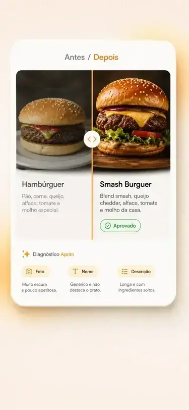
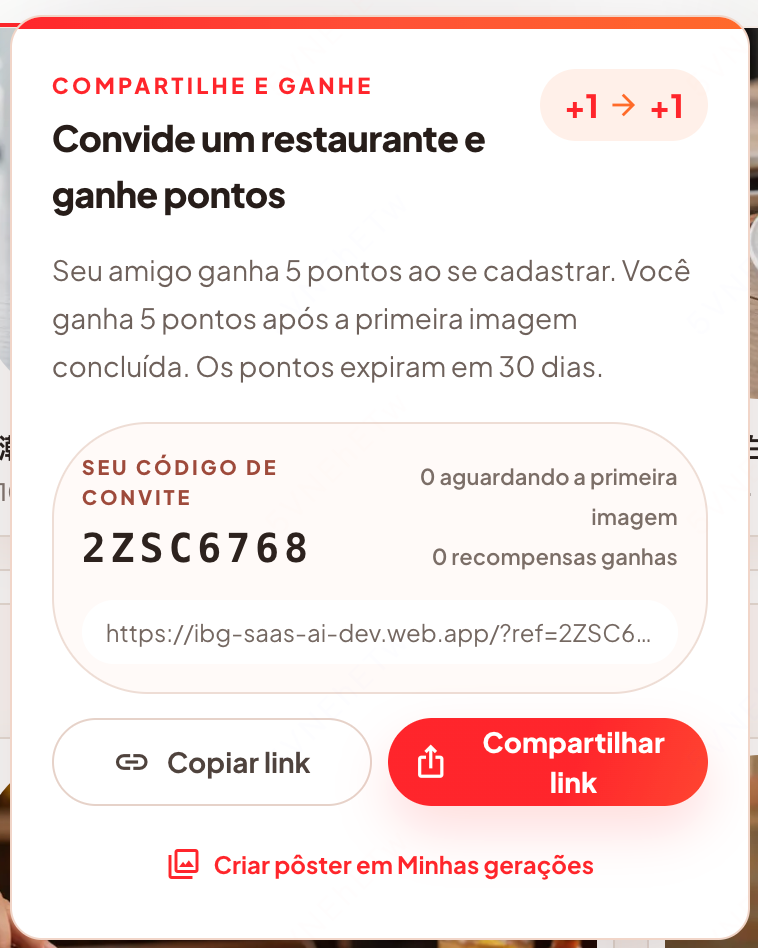
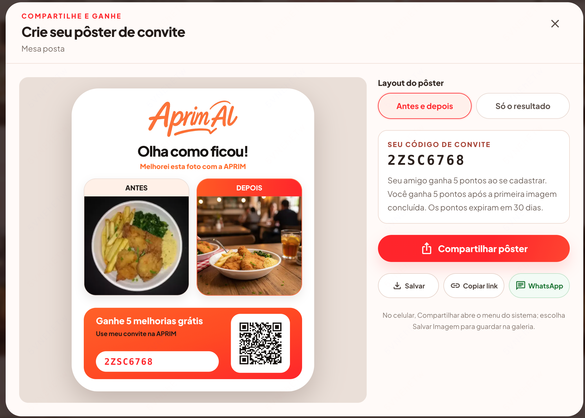

GROWTH PILOT · 2026
巴西餐饮商家
全渠道营销方案
邮件获客 · AI短视频扩量 · WhatsApp演示 · 推荐裂变
目标：用 30 天验证高意向人群、有效话术与可扩张渠道

先用邮箱获得兴趣，
再把高意向用户带进 WhatsApp。
短信只承担已授权提醒，不承担陌生名单教育。
引导点击、回复或申请样图
用真实样图完成高信任演示
把用户拉回站内或 WhatsApp
每个渠道只做一件事，才能知道转化来自哪里。
Zesto 的分发结果说明：
邮件可以成为商户意向的主入口。
第一轮只打 500 家，
但从 2,820 家最匹配商家中抽样。
第一批建议：São Paulo 为主；每个品类抽 80–120 家，保证 A/B 测试有可比性。
不要卖“AI 生图”，
要卖更快上线的高质量菜单。

手机拍摄 →
专业菜品图
改善光线、构图与清晰度
不改变真实菜品与分量
结果可直接下载并用于菜单
菜单 / 菜名描述 →
批量生成菜品图
上传纸质菜单，一次识别整份菜单
或输入菜名与描述直接生成
用统一风格快速补齐无图菜品
不是“以后可以做视频”，
而是已经有一条20秒素材可以投放。
“菜很好，但照片呢？”用餐厅熟悉的痛点抓住注意力。
不改食材、不改分量，降低AI失真的顾虑。
把结果带回真实菜单场景，而不是只展示一张美图。
“Testar com uma foto”统一跳入意向页或WhatsApp。
投放带来第一位用户，
分享海报带来下一位用户。

积分在好友完成第一张图后发放，可降低无效注册和刷量；30天有效期制造再次使用的理由。核心指标：分享率 × 邀请注册率 × 首图完成率。

从“愿意看一眼”，
走到“愿意分享自己的结果”。
视频展示前后变化
继续进入 WhatsApp
打开服务会话
引导注册生成更多
好友完成首图得积分
500 家先验证，
胜出后分批扩大到 3,000 家。
意向落地页
来源参数与看板
3 种视频脚本
人工交付样图
上线 Reels / TikTok
WhatsApp 承接
D+3 Follow-up
启动邀请积分
分享 / 邀请 / 付费
决定规模化
扩量条件：邮件意向可复现 + 样图交付承接得住 + 视频 / 分享能带来有效首图
平台背书 + 明确免费权益 +
不到一分钟的下一步。
Assunto: Parceiro 99Food: ganhe uma imagem profissional para o seu cardápio
Olá, parceiro 99Food! Boas fotos ajudam o cliente a escolher com mais confiança. Mas fotografar todo o cardápio pode ser caro e demorado. Seu restaurante foi selecionado para receber uma demonstração gratuita da Aprim AI. Você pode enviar uma foto feita pelo celular, uma foto do cardápio ou apenas o nome de um prato. Nós preparamos uma imagem para você avaliar. [Botão] QUERO CRIAR MINHA IMAGEM GRÁTIS Sem cartão de crédito. Leva menos de 1 minuto para começar. Aprim AI · aprim.com.br Não quer receber novos contatos? Responda SAIR.为什么更接近已验证模型
第二封展示过程，
第三封给用户一个体面的结束。
D+3 · 过程型跟进
Assunto: Exemplo de imagem para cardápioOlá, [Nome]. Só para mostrar como funciona: você envia uma foto comum do celular, escolhe o estilo e recebe uma imagem pronta para o cardápio. A Aprim também consegue criar imagens a partir de uma foto do cardápio ou do nome e descrição do prato. Se fizer sentido, responda com UMA FOTO ou CARDÁPIO.D+7 · 礼貌结束
Assunto: Encerrando por aquiOlá, [Nome]. Vou encerrar por aqui para não lotar sua caixa de entrada. Se algum dia quiser melhorar uma foto de prato ou criar imagens para itens sem foto, a Aprim está em aprim.com.br. Se preferir, responda SAIR e não enviaremos novas mensagens.WhatsApp 的任务不是陌生开发，
而是收素材、交付样图、完成转化。
用户主动发起 · 立即确认任务
Olá, [Nome]! Aqui é [Atendente], da Aprim AI. Escolha como você quer testar: 1. Melhorar uma foto existente 2. Criar imagens a partir do cardápio 3. Criar uma imagem pelo nome do prato Agora toque no ícone 📎 ou na câmera e envie a foto. Se escolher a opção 3, envie o nome, os ingredientes e uma breve descrição. Ao enviar, você autoriza a Aprim AI a processar o conteúdo apenas para criar esta demonstração. 标准回复按钮只确认选择；图片仍由用户通过相机或附件发送。样图返回 · 24 小时会话内
Pronto, [Nome] — preparamos uma versão para o [Prato]. O objetivo foi melhorar luz, enquadramento e nitidez sem mudar os ingredientes ou a porção. Você prefere esta versão ou quer testar outro estilo? [Usar esta] [Outro estilo] [Criar mais imagens] 企业主动发起会话需使用获批模板；24 小时窗口外也只能使用模板。短信要在 160 字符附近，
只说身份、事件和下一步。
Aprim AI: sua imagem do [Prato] está pronta. Veja o resultado: [link]. Para não receber mensagens, responda SAIR.
Aprim AI: você ainda pode criar imagens para itens sem foto do seu cardápio. Continuar: [link]. SAIR para cancelar.
Aprim AI: confirmamos sua demonstração hoje às [hora]. Responda 1 para confirmar ou SAIR para cancelar mensagens.
先确认门店和体验意向，
再让用户主动进入 WhatsApp。

最小表单
收集 WhatsApp 号码与明确授权。按钮统一为：
Continuar no WhatsApp
同时记录 source、campaign、creative、category。
先用 500 家找到胜出组合，
再分批扩大到 3,000 家。
| 品类 | 主卖点 | 视觉角度 | CTA | 样本 |
|---|---|---|---|---|
| 甜品蛋糕 | 照片优化 | 颜色与质感 | Teste com uma foto | 100 |
| 披萨 | 照片优化 | 热度与拉丝 | Envie uma foto | 100 |
| Açaí | 菜单生图 | 配料层次 | Criar itens sem foto | 100 |
| 冰淇淋 | 照片优化 | 清晰与造型 | Ver antes/depois | 100 |
| 日料 | 菜单生图 | 统一视觉 | Gerar pelo cardápio | 100 |
增长指标决定扩量，
风险指标拥有一票否决权。
把“意向”固定为
提交表单或确认试做
按脚本与品类归因
自然流量胜出再投放
只承接主动会话
记录交付时长与满意度
奖励首图完成
不奖励无效点击
北极星漏斗：有效意向 → 上传素材 → 完成首图 → 分享邀请 → 好友完成首图 → 付费。
先跑 500 家，
跑通后扩到 3,000 家。
再购买更大的流量。